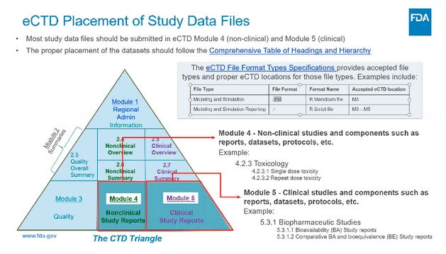

- “Beverly Chin - Roche”
- “Heidi Curinckx - Johnson & Johnson”
- “Bob Engle - BioGen”
- “Miriam Fossati - Merck”
- “Steven Hassendinckx”
- “Christopher Kania - Biogen”
- “Ning Leng - Genentech”
- “Eric Nantz - Eli Lilly”
- “Tim Powell - Biogen”
- “Joseph Rickert - R Consortium”
- “Paul Schuette - FDA”
- “Ben Staub - GSK”
- “Adrian Waddell - Roche”
- “Heng Wang - Genentech”
- “Peikun Wu - Merck”
- “Nan Xiao - Merck”
- “Hong Yaan - Regeneron”
- “Renping Zhang - FDA”
- “Yilong Zhang - Merck”
- “Jizu Zhi - FDA”
Joseph Rickert brought the meeting to order and stated that with Eli’s help he was able to reactivate the FDA gateway and asked those with the passport to login and make sure there are no other impediments. The details are:
The R Consortium account has been reactivated: To access the R Consortium account, please, use this URL: https://esgtest.fda User ID: joseph.rickert@rstudio.com Password: Please see Ning, Yilong, Eli or Joe The Portal is : https://esgtest.fda.gov/
He then asked Ning to introduce Beverly Chin from Roche and Tim Powell from Biogen who are both experienced in making regulatory submissions.
Ning provided a brief overview of the project and an update on progress since the last meeting which included recruiting new members for the working group from presenting at the R/Pharma conference and a new project website (https://rconsortium.github.io/submissions-wg/) built by Eric Nantz.
Asks to members We need more people to review the submission package. Bob Engle volunteered Nate Mockler (nate.mockler@biogen.com) as a reviewer. Identify FDA members who can do the review. (Paul said that he has two candidates.)
Beverly asked some clarifying questions and we confirmed that We are using the test gateway CDER will be the center It is a formal package
Ning then went over some feedback provided by reviewers so far. The most important issue was Inconsistent table layouts. However, Ning pointed out that using multiple table layouts is intentional. The objective is to have three tables follow different company specific standards in order to cover tables built with different R packages. Ning said that we will add a disclaimer to the report in order to inform the FDA reviewers of our objectives.
Reviewers also flagged some things that are not consistent with best practices, such as including the number of individuals at risk on Kaplan-Meier curves.
Joe asked Ning to review the contents of the Pilot 1 repo
Ning explained the reviewer comments on issue #47 on the Kanban Board. Ning will link the GitHub issue to a google drive containing more material.
The group then discussed a timeline for the remainder of the project and settled on the key dates: Package to be complete and ready to go by end of Friday, 2021-11-19 Submission to be made on Monday 2021-11-22 Joe took the action item to setup a zoom meeting for 9AM PT time on 11-22
There followed an extended discussion about whether to use .txt or .r for the R files. The FDA documentation says they will accept both, however, some people Including FDA folks might reject a .r file because they misunderstand the documentation. On the other hand, getting a .r through would be a big win on its own.
It was also suggested to include a separate README document to describe how the package is constructed.
At 36.33 into the video Paule Schuette of the FDA shares a slide his colleague Heather Crandall presented recently at the R/Pharma conference about eCTD placement of Study Data Files.

Note that R Markdown and R are listed among accepted eCTD format types.
At 44.33, “Scrum master” Adrian Waddell leads the group through adding new tasks to the Kanban board: https://github.com/RConsortium/submissions-wg/projects/2
Summary of tasks leading to Submission
First round of adjudication by 2021-11-11 Decide about submitting .r files 2021-11-11 Adjudication by 2021-11-18 Final Review 2021-11-19 by Eric Nantz, Adrian and Nate Mockler Ning and Yilong will address the comments. Submission on 2021-11-22 Ning Leng, Yilong Zhang, Paul Schuette, Beverely Chin, Tim Powell and Joe Rickert will participate in the Submission meeting. The meeting will be recorded.
Joe took the action item to setup a zoom meeting for 9AM PT time on 2021-11-22 to make the submission.
The video of today’s 11-5-21 meeting is available here passcode: L*jwHXn5
The next meeting is scheduled for Friday, 2021-12-03.